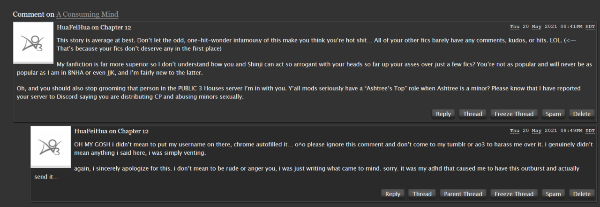

on october 6, 2016, an anime premiered that would change my life forever, called yuri!!! on ice.
i have never watched yuri on ice, nor will i ever for reasons that are ultimately very sillypetty at this point. this essay isn't really about yuri on ice (although that would have been a very funny way to interpret this volume's yuri theme), but it is still about an anime that first aired on october 6, 2016 and subsequently changed my life! kind of. sort of. you'll see!!!!!
flip flappers is a niche magical girl anime that i saw when i was a teenager and still didn't really know what gay people were. well okay i knew what gay people were by that point since i existed on tumblr, knew i was ace, and gay marriage had been legalized for like a year by that point, but I had zero idea how queerness expressed itself and therefore thought, and indeed publicly insisted on the whole-ass flip flappers blog that i ran, that the two main leads could be interpreted as Not Gay.
only tangentially related, but flip flappers is actually where I picked up the habit of saying "i love love LOVE [insert whatever here]" bc the way papika, one of the mcs, would say "i love love LOVE you!!" to cocona, the protagonist, every so often just kind of branded itself into my brain.
flip flappers, to me at the age of fifteen, was about whimsical, nearly-nonsensical adventures through the fantasy land of pure illusion, during which the main character cocona learned to loosen up and openly reach out for her desires. meanwhile, her partner papika learned to pay attention to and consider the needs of others without sacrificing her fun-loving and quirky personality. they spent every episode in a different anime genre looking for these "amorphous shards", which allegedly would grant wishes but looking back are kind of just macguffins. idk i was actually most obsessed w/cocona's pet rabbit, uexküll, bc he was GREEN and SQUISHY.
having just rewatched the anime for the sake of this essay, i can now say with certainty that i was a Very Sheltered teenager, because the whole show is exactly as gay as i remember it being, but for basically just uninformed casually homophobic teenager reasons, it just never occurred to me that hey! this is some Gay-Ass Shit! there are a lot of moments, especially in the first half of the show, where the metaphors for sexuality just pop out of nowhere, hit you in the face with a brick, and then beat you with a hammer for good measure (in my now more-realized queer opinion). i also wrote down a boatload of thoughts as i went through the show this time that i probably won't be sharing with everyone today because simply put, this is more of a retrospective on flip flappers's place in my life through the years.
flip flappers marked the first time i ever felt like i Belonged to a fandom community. like yeah it wasn't my first fandom or anything, but it was the first time i felt like other fans saw me. it was the first time i received asks on tumblr requesting my thoughts on some part of the show. it was the first time my fanfiction ended up on a reclist. it was the first time i had people ask me if i was back when i'd post again after a long pause.
funny story abt that reclist thing. although i'm pretty sure i made it clear on my blog that i didn't really ship any of the characters in the show, i still wrote a little bit of shipfic anyway, one of which made it onto that list. i was touched by the gesture, even though i knew as i'd been writing it that i was, like, ~pandering to the yuris~
…or something. i don't actually know what i was thinking back then anymore. but it was still my first time writing anything that focused on the romance between two girls! and for someone who grew up in a deeply christian and homophobic household (whose repercussions i'm still unpacking to this day!!), that's pretty wild!! i'd reread it so that i could talk abt it more for this essay, but i'd rather not take psychic damage from reading my teenaged self's deeply 2016 writing style, so im just going to lie to all of you and say that i deleted it and lost the files. whoops!
still, that sense of community was important to me. a fun fact about me is that through my years on ao3, i have never once removed flip flappers from my favorite tags list, even though i'd never check on it for years. something about that sense of belonging and participation and identification within the community, combined with its niche status as a result of everyone else's yuri!!! on ice fever, has cemented its place in my heart as something to look back on every so often and bring up at every given chance.
i'd like to think that flip flappers was an important stepping stone in my years-long process of dismantling my own internalized homophobia. after all, even if i didn't actually ship cocona n papika when i wrote that fic, something about writing it anyway must've paid something towards my eventual comfort with queerness in the spotlight.
fast forward a couple of years to when i'm comfortable with queerness in the spotlight. i've aromaticized [sic] my orientation, trans'd my gender, and finally jumped ship (lol) from the part of fandom that shipped mostly m/f to the part of fandom that mostly shipped m/m and f/f. (i know that the m/m and f/f shippers are technically distinct social circles but they are The Same to the Hets™, so the functional point of ‘i did the fandom equivalent of moving halfway across the world to a totally foreign country’ remains the same.)
and like. this is kind of a long story so i’m not going to get into it, but at some point, fairly soon after i started writing f/f more often, someone left a LOGGED-OUT HATE COMMENT with MY USERNAME filled in on a fic for a fandom and ship i’d never even heard of before the morning i just woke up and found someone in my tumblr messages sending me a screenshot of said logged-out hate comment and telling me, “hey, just thought i’d bring it to your attention that you have someone impersonating you.”

??????????????????????????????????
(image courtesy of the person who messaged me)
who does that. i still don’t know.
i spent a week hyperfixated on trying to figure out who did this and why they seemed to be targeting our good yuri soldiers. however, all this accomplished was that it left me psychically vulnerable to the moment one of my friends said to me, “if you were into genshin, you’d be a xiao stannie.”
this is important, because in that moment, i did not realize that i was experiencing a situation that they literally sing about in acclaimed broadway musical phantom of the opera: i was confronted with a point of no return, because as soon as i asked her, “who is xiao?” my fate was sealed and my brain was replaced with a colony of worms dedicated to genshin impact.
this is the part of the story, about 1,250 words in, where i finally start talking about the yuriisms.
so, as we all know, “yuri is when there’s themes and motifs and yaoi is when there’s two blokes who do fuck all” (tumblr user dyggot, 2023); that “yaoi is about the entanglement and yuri is about the yearning” (tumblr user thyminesquared, 2023). to ME, yuri is about the distance between one’s self and others around them (maybe people, maybe dreams and ideals), and the deeply-rooted desires that grow in that gap as a result.
for a variety of reasons, the genshin impact fandom has a bad reputation, and it showed up several times in my frenzied search to track down my impersonator. although i did not (and still don’t!) know for certain if genshin had anything to do with that incident, its association still scared me enough to not want to develop a Name there.
at first, i decided to simply Not Participate in the fandom. if i saw it on tumblr, then i’d send a link to my bff. if i read fic, then i’d quietly leave kudos and leave. if i wrote genshin fic myself, then i’d…
at first, i thought i just wouldn’t post it, keeping it as drawerfic forever and ever. but unfortunately, i had become a bit of a show pony in the years since flip flappers, tossing out all my thoughts and ideas for the people of fandom to see— that’s how i’d developed a Name to be Stolen in my previous fandoms— and to write something without sharing it was frankly kind of agonizing.
publishing strictly through the anonymous collection on ao3 was the compromise. i mean, you can’t develop a Name for yourself if you forsake your whole fannish identity and ability to build connections through it, right? i created a deliberate gap between myself and my new anonymous identity, painted an absence in my own form to sit in the fandom space with which i would have otherwise connected.
and i just think that’s super fucking yuri, y’know?
—————
at first, this did work.
i didn’t need people to like Me because I was not there.
so then why are you writing about it?
why did you set up all those hoops for people to find you?
…
i’m tired of people failing to see me.
…who are you?
istaroth.
venti.
istaroth: i know who you are. i literally wrote you about to take a dick up the butt just now!
venti: i was trying to be polite!!
istaroth: aren’t you supposed be scared? or embarrassed?
venti: of what?
istaroth: of me.
istaroth: y’know, yaoi fangirl? arbiter of your butthole’s fate?
venti: i’m more curious about what a girl [someone] who devotes so much of [t]he[i]r time and attention to writing very detailed lemons about [t]he[i]r “yaoi otp” wants to be seen as.
istaroth: *glares*
istaroth: i just wish that… i didn’t feel like people had an image of me that i have to live up to. like i’m “wholesome” and “pure” and “perfectly acceptable” and would never do anything that would betray those expectations.
venti: like write yaoi
istaroth: and i wish that people could connect with that part of me. i wish that Senpai didn’t have to greet a mask when she noticed me in the hall.
venti: so then why not tell them?
istaroth: i can’t.
venti: if it’s so much of a problem—
istaroth: even if they don’t leave me, they’ll look at me differently.
venti: but wouldn’t they at least be seeing you?
venti: who’s stopping you?
istaroth: i just want to know that there’s someone else like me out there, and that they want to know more about who i really am just as badly as i want to be known.
istaroth: how can i know that it’s me they’re curious about if i don’t hide my face? how do i know they’re not just asking because they think they know me because of my name?
istaroth: i don’t want to feel like i’m living in the shadow of my own past self.
venti: i don’t understand you.
istaroth: i wish you did.
——————————
okay so you’ve probably caught on by now that the essay isn’t actually over yet. which is good bc i have more thoughts kept in this trench coat that you’re all going to experience right here right now.
so contains at least one catboy :D is a hypothetical fanfiction that i proposed upon getting my brain fundamentally rewired by yaoizine (yes i consider yaoizine to be one word) volume 1 about these two guys from hit gacha game genshin impact named xiao and venti. yes the xiao who lured me into genshin in the first place that was foreshadowing because that’s a normal thing to do in an essay. anyway their conventional ship name is xiaoven and they’re #boyyuri.
as established by the immaculate scholarship of the previous two volumes, being yaoi or yuri isn’t about the genders of those involved, so my fourth and *unintelligible mumbles* essay in this magically endless trench coat that i assuredly own in real life isn’t about whether two boys can be yuri. OF COURSE THEY CAN BE YURI!!!! the question now is HOW are they yuri?
so in the world of genshin impact, some people will sometimes get these things called Visions (which in the original chinese are literally called “eye of god” (神之眼)), which allow them to control one of seven elements, each of which has an ideal attached to it because each element is also associated with one of the seven gods (archons). Visions are considered to be gifts from the gods, representations of a person’s dearest wish, crystallized into physical form. the element of a person’s Vision will be directly related to the kind of ideal they strive to uphold and as such can generally tell you a lot about a person’s desires. the only two elements that really matter here are anemo (wind, associated with freedom and the fictional nation of mondstadt) and geo (stone, associated with contracts/obligation and the fictional nation of liyue).
venti is a wind sprite from mondstadt who ascended to godhood at the end of a rebellion against the at-the-time god of storms keeping his people in a cage made of windstorm thousands of years ago and chose his ideal of freedom to honor the bard who led said rebellion and died at the end of the final battle. whether the nameless bard even got to see the clear skies he fought so hard to see is currently up to interpretation. also venti took on the nameless bard’s appearance so that his nation’s people would never forget the true hero who won their freedom, but because thousands of years have passed the people have kind of forgotten by now anyway, and venti probably has a lot of identity issues about it. mihoyoverse hasn’t let him out of the lore basement since the game’s release so the identity issues are technically headcanon. also he’s a bard who plays for wine because singing to pass on the memories of heroes past and then drinking to numb the grief of people’s forgetting is how he Copes™. AND ALSO he will occasionally sleep for hundreds of years at a time.
MEANWHILE xiao is an immortal/“illuminated beast” from liyue whose true form is technically that of a bird, but he goes around in the form of a hot emo boy ostensibly because he needs hands to don his mask, hold his spear, and do his dance to conquer the remnants of evil gods, the act of which literally taints his soul with their sins, which are called his “karmic debts” in canon. anyway he was enslaved by an evil god in his youth because said evil god (probably) knew his True Name and because we’re going by fairy rules this means he was forced to commit atrocities (namely eating people’s dreams) against his will until the god of contracts geo archon killed his previous master, gave him a new name, and contractually tasked him with the job of subduing the demonic remnants of the other defeated gods, which he has since proceeded to unflinchingly, unwaveringly, and unquestioningly obey for the last few thousand years. however, despite his unfathomable obedience and devotion to his duty, his Vision (his life’s greatest desire) is that of anemo (of freedom). also a few hundred years ago when he was about to succumb to the weight of his karmic debts, xiao’s life was saved by the sound of someone (venti) playing the flute in the marsh where he’d been working, and so now his dream, the deepest wish he holds close to his heart, is to someday “wear the mask and dance — not to conquer demons, but to the tune of that flute amid a sea of flowers.” (xiao’s character card, genshin impact, 2021)
that flute bit was all we xiaoven shippers had to hold onto for like two years btw. and also this extremely yearnful voiceline from xiao about venti that’s like “venti? is that what he goes by these days? his tunes are… nevermind.” but that’s… not exactly beside the point here, but more like tasty flavoring at best for what i want to discuss, because obviously, these few snippets alone are just rife with potent yuri energy.
to elaborate on paragraph um. 18 of this essay, yuri is specifically about the uncrossable distances between two people who are already sitting right next to each other, so close that only a single thread of wind could weave its way between them— although, as evidenced by the fact that such a thread of wind can still wave its way between them, they are still shy of truly touching— and the painful yearnings of being unable to close that gap…
even though you both exist so close to one another, so similar in both place and time, you are the only thing stopping yourself from reaching across that seemingly infinite distance.
as a result, i think that unlike yaoi, yuri tends to have a greater mutuality to it: whereas i understand being in a yaoi to be more about acting on one’s impulses towards another and passing along cycles of power, i believe that an important aspect of being in a yuri is the constant fear and anxiety of violating an unspoken boundary because you’re afraid that you aren’t actually on the same page about those. deep down inside, you know that you’re not supposed to want all the things you’ve built for yourself in all those private daydreams and self-indulgent fantasies about yourself and the other person, because you know you’re not supposed to have drawn your boundaries the way you have, such that the other person would be let in on the most intimate parts of your identity, if they were willing to see all that is ugly sleeping beneath your skin.
as mentioned in the paragraph summarizing his lore, xiao’s youth was marked by the fact that his very autonomy was continuously violated in service of forcing him to violate others’ boundaries, crushing their hopes and devouring their very dreams. his deep cultural ties to liyue as the land of contracts means that he carries within him a keen sense of obligation as inseverable as the need to breathe; thus, saddled with guilt and believing himself to be incapable of gentility, he has come to view himself as nothing more than a weapon for others to use.
in signing his contract with the geo archon (whose name is zhongli btw, since he’ll probably come up a lot), xiao went from a situation where his agency was continuously denied and his boundaries intimately violated to on where he relinquished his agency and had his boundaries delineated for him by his new lord. he has no desires of his own; immortals aren’t like that. (if that were true, he wouldn’t have a Vision.) he is not an active subject in his own life; anything he does is the effect of someone else’s will. (if that were true, he would’ve stopped protecting liyue the moment he learned that his lord abdicated his rule.) he does not let anyone near him; it is inevitable that his karmic debts will force his hand against them. (if that were true, he wouldn’t have been saved by the sound of venti’s flute playing nearby.)
don’t you see? he places himself in a subservient role to everyone around him, rigidly obeys every ritual of propriety, because he is afraid that by asserting agency over a situation, he will end up violating other people’s boundaries again, except this time, the responsibility for doing so falls squarely on his own shoulders.
during the main quest arc for liyue, zhongli literally fakes his own death as an archon so that he can finally retire and be free from his own contractual obligation to the nation. this gives us reason to believe that xiao’s contract with the geo archon has thus been rendered void, meaning he no longer has any obligation to continue his endless suffering for the sake of liyue, yet does so anyway. i think a lot of fans tend to view this as xiao needlessly chaining himself down to his duty, something that’s often framed in fanworks as something rather tragic in venti’s eyes.
however, as the god of freedom, venti feels very strongly about giving others the freedom to make their own decisions, even if he himself may disagree with them or wish they had chosen differently. others’ autonomy is deeply important to venti, perhaps even so far as to call it sacred: to order anything from anyone would be a violation of the boundaries venti has set for himself as an archon.
now let me remind you of a snippet of lore i mentioned earlier: the element of a person’s Vision will be directly related to the kind of ideal they strive to uphold and as such can generally tell you a lot about a person’s desires.
xiao wields an anemo vision— the only one in liyue thus far, in fact, presumably because that is how deeply ingrained the sense of obligation is in its culture— and wears it visibly on his person at all times. it would be ridiculous NOT to believe that venti knows, intimately, how xiao desires.
and i think that a lot of fans can fail to consider the idea that to xiao, his duty of protection is a choice he made of his own volition when he was first set free, and is, in all likelihood, one he continues to make in canon. yes, this choice comes with a great many obligations restraining him in various ways— but do our choices truly mean anything if they are not bound by obligation? this is something venti would obviously understand and respect as lines drawn in the sand by xiao himself.
still, it’s clear from the various scraps of in-game lore that xiao craves proximity to and knowledge about his savior in the marsh. yet, he refuses to go out of his way to attain these things and will even deny ownership of these desires altogether because in a sense, they are blasphemy. venti, although not his archon, is still a god. might seeking him out over zhongli not be construed as a sign of detracting faith in the geo archon? or, even if that’s not so— who is xiao to ask anything of venti? the god of freedom must surely be a flighty little thing, following his every capricious whim; to ask him to stay would be akin to tying him down, no?
venti normally spends his periods awake as a bard wandering as he pleases through the nations before falling asleep in some ditch for a few hundred years, while xiao has been confined to the borders of liyue to execute his duty every day and night without fail or holiday for the last few thousand years. if venti cared for him, then he would seek xiao out of his own free will, no?
clearly, there is no need for xiao to call out for him. if venti wants to be with him, he will be there.
(and if he doesn’t, then he won’t.)
((after all, it is the duty of the servant to wait on the master’s call.))
so it’s easy to imagine that these two immortals might end up in a sort of song and dance of propriety for a while, that at first might be genuine, but eventually just becomes habit and custom. they both want, in some way, for xiao to lay down his duty, to be free of the strict hierarchy of master & servant, or god & disciple.
but for venti to say it so plainly would feel like he’s trying to convert xiao to his ideals— a discomfort that would more than likely only be compounded by how seriously xiao takes the word of god(s), and how expressly venti hates being treated like anything but an equal— and so he would hesitate on his feelings. and for xiao to say it so plainly would feel like a betrayal of his duty— that which he chose to shoulder as his first act of free will.
you see it, right? the gap between these two characters, whose lives will otherwise cross and touch over and over through their long, immortal lives, and the mutual desires they can both plainly and painfully read in one another, yet never act upon due to their already-established senses of propriety and tradition?
these are the basic yuriisms of xiaoven genshinimpact.
and it’s kind of funny that this journey started with flip flappers in a way, because as i mentioned towards the start of this essay, this piece is more of a retrospective on flip flappers’s place in my life through the years. AND A PLACE IN XIAOVEN IT DOES HAVE FOR ME AS WELL!!!
now, something that i’m very fond of doing with art are the acts of retelling and reinterpretation. sometimes both at once, wherein i’ll break down a narrative to its abstract components (because truly what is a character if not a miserable little bag of themes?) and then use that to translate it into a wildly different setting or whatever that can be read as the original story, once you know it’s there— but will the audience naturally intuit that connection? it’s harder to say.
so a part of flip flappers’s legacy in my own life is the fact that while other fandoms have come and gone in my life, i never forgot how much this show and its characters meant to me, right? one of the ways i’d often bring flip flappers into my later fandoms would be to come up with little flip flappers aus, placing my blorbos-of-the-moment into some of the zany situations that happen across the show, maybe even occasionally dabbling with the thought of dragging said blorbos-of-the-moment through the entire plot of the show.
however, despite having a very strong and traceable sense of Taste™ in otps and blorbos through the years (monsters×monsterfuckers and sad nerds, respectively, in case you’re wondering), thus rendering role translations for aus between canons generally pretty easy, for whatever reason, i never actually wrote any of them until i did, actually, with xiaoven.
it’s hard to say why i didn’t bother with getting any flifla aus written for any of the other pairings i’ve cared deeply about through the years until xiaoven. maybe it’s because most of them were m/f and i knew that flip flappers’s intrinsically queer narrative about discovering and exploring the ways one’s sexuality deviates from the norm would be harder to do justice that way. maybe i wasn’t as good at boiling narratives down to their more abstract components back then.
personally, i think that it was mostly subtle differences in the candidate pairings’ themes that kept their flifla au pitches from ever becoming more than mere velleities. remember what i said earlier about venti (probably) having a lot of identity issues?
episode 7 of flip flappers, “pure component”, sees cocona start developing her sense of self-identity from the ground-up as she engages with several different components of papika, who has been split into several different love interest archetypes for the episode, in order to determine both what exactly she wants her relationship with papika to be and what sorts of tastes and preferences she has in a partner.
cocona fears being imperfect, fears not being what others want and/or expect her to be when engaging with them, and so until this point in the show, she has been mostly absorbing little parts of other people’s identities, little snippets of self that others perceive or project onto her or express approval of, into herself. cocona’s greatest fear is to make an incorrect decision about herself, triggering irreversible changes in herself that will mean she no longer fits into her own world. even though dr. salt says early on in the episode, “imperfect interaction is what defines our existence”, cocona struggles to cope with the fact that she has desires that are specific to herself which will cause friction with others regardless of whether she expresses them or not.
probably the most important scene in this episode’s parade of papikas is the last one, wherein a devilish-looking papika dressed in an adult nightgown (i don’t think it really counts as lingerie, but i’m also not the most informed person to be asking for this anyway) asks cocona, “is change really so bad? no matter how much you change, i’ll always love you. what about you?” in the ensuing conversation, cocona finally comes to pinpoint the fact that papika being the papika she knows is something that is important to her (although she still cannot yet articulate why)— something that, to me, indicates the first germ of her acceptance towards having desires.
this was the episode of flip flappers that i paid homage to in one of my favorite xiaoven fics that i’ve written to date. (i’m deathly allergic to recommending my own art to others, so i’ll keep its title out of this piece and just let those who are curious enough to know dig it up themselves.) in it, i feel i explored very clearly many of the yuriisms i talked about earlier in this very piece (along with a few more that i did not have the time to fit in, such as grief and the achievement of self-love through the reciprocal love of another), although at the time i had not realized how extremely yuri xiaoven themselves were, let alone the fact that they are thematically much more yuri than yaoi was of significance to me.
i’ve always needed someone or something familiar at my side before i can approach something i’ve never done, tried, or thought about before. considering the fact that there was a very long period in my life when i did consider myself a cishet girl— something i don’t Regret or Resent in the slightest— it makes sense that flip flappers, although far too advanced a yuri to have been my first foray into the genre, ended up being such a critical stepping stone in my acceptance of queerness because it was about two girls. at the time, i thought i was a girl, so the step into the unfamiliar— two girls who loved one another— was not too painful.
of course, growing up, it has been grappling with the fact that i Exist in this world and might perhaps be Perceived as something i do not feel reflects the Me that i’ve built myself to be that made me realize that, hey………… maybe im not a girl. suddenly, i was one step closer to a queerness within myself i had never noticed or considered before, and i think in general, i just have an awful time looking Straight At things, especially at parts of myself that seem too ugly or painful to accept and untangle. the idea that *incomprehensible mumbling about Being transgender and the dimension that brings to one’s queerness* was (maybe even still is) A Bit Much to look at all at once, so i just didn’t look at it.
for quite a while, i puzzled over the fact that my attachment to xiaoven as The Yaoi That Changed My Life™ is somehow deeply Gendered. like, i knew that aspect was there, but i had no earthly idea why. and i think that the fact that it is yuri, rather than yaoi, is a critical part of why it clicked so well for me. i think that to say, “i’ve always been more comfortable with the idea of yuri than yaoi in my media diet,” wouldn’t be that much of a lie, if a lie at all.
like, i think that yaoi and yuri are kind of genders unto themselves. where yaoi is overbearing presence, yuri is subtle absence. where yaoi is the text, yuri is what is read between the lines. and where sometimes, staring at my own self is as painful as looking directly into the sun, my solution has typically been to study its reflection in the moon.
(yes yes “nice dichotomy asshole now what lies outside of it?” i’m getting there!!!)
being nonbinary gives me a complicated relationship to both masculinity and femininity. there is a part of me that wants people to look at me and feel the same way they would seeing a pretty boy in a skirt, but without cutting my hair and pitching my voice down, that’s not really something i can reasonably expect without Telling People Anything.
something that i found very odd when i first started looking at my own transgenderism is that i felt more understood and comforted by portrayals of transfemininity than transmasculinity. i had thought that being transfem and being ~afab~ (as they say and i will use for lack of a better term) were mutually exclusive, but when i paid it closer thought, i realized that it was because i felt it was impossible for me to be transfem as an afab that there was a sense of distance between myself and the subject matter that made it easier, safer to look at. i could study the feelings and perspectives tied to Being Trans without letting go of the lifelong familiarity of feminine identity.
(coincidentally, this had the same logic as the argument i repeatedly saw growing up that eventually taught me that “the only reason straight women get obsessed with yaoi is because they’re fetishizing gay men” was simply untrue.)
and so, arriving at xiaoven, although i was ready to start exploring intimate masculinity (and masculine intimacy) as it related to the repressions of my asexuality and Deeply Christian Upbringing®, i still needed to balance out the Unfamiliar Distance of using men to explore the guilt of expressing desires— and i think that although i couldn’t articulate it at the time, it was the more yuri nature to the way i felt they would cope with Want that provided that Something Familiar i needed to make that leap.
this essay was deliberately structured to follow a sort of rising presence of yaoi in my life and the way it has been entangled with yuri, parallel to the way i’ve gradually come to realize that there is a masculinity to my sense of gender that is inextricable from my femininity and vice versa. it’s been a lot of looking back and having feelings about my own journey of queer self-discovery, although not once have they been hard feelings.
and like, maybe this, too, is yuri!! this chasing of tangled-up desires from one to another, only to loop back around into itself, yet remaining distant from its original premise in some meaningful way!!!!!!
and i think that’s beautiful.
and a strikethrough at the end ahaha